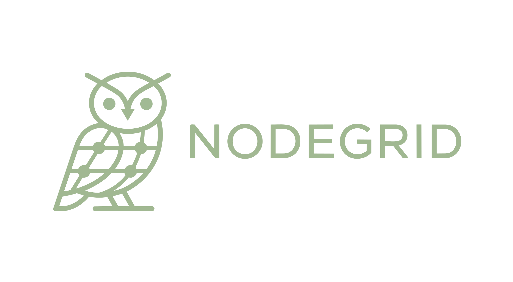

Estratégia de marca, identidade visual e tom de comunicação.
A base que dá coerência a todos os pontos de contacto da NodeGrid.
01
Manifesto & Golden Circle
O Simon Sinek ensina que as marcas mais poderosas comunicam de dentro para fora.
Não começam pelo que fazem — começam pelo porquê o fazem.
Este é o Golden Circle da NodeGrid.
WHY — O Propósito
Acreditamos que software de qualidade não devia ser privilégio de grandes empresas.
Existimos para democratizar arquitectura de nível enterprise — acessível a quem constrói
a próxima geração de produtos portugueses.
HOW — O Processo
Com craft e arquitectura: engenharia rigorosa, comunicação honesta,
e parceria real — trabalhamos dentro do teu negócio,
não apenas para ele.
WHAT — O Serviço
Desenvolvimento de software custom: aplicações web, plataformas,
integrações e consultoria técnica para startups e PMEs.
O manifesto não é marketing copy — é a bússola que orienta todas as decisões de produto, comunicação e cultura da empresa.
02
Arquétipos de Marca
A NodeGrid opera com dois arquétipos em tensão criativa.
O Creator fornece a disciplina e a visão de longo prazo.
O Rebel fornece a energia para desafiar o status quo da indústria.
Creator
60%
Valoriza craft e excelência técnica
Orgulho no trabalho bem feito
Foco em construir algo duradouro
Disciplina e atenção ao detalhe
CRAFTPRECISÃOARQUITECTURAVISÃO
Rebel
40%
Desafia convenções da indústria
Honesto sobre o que não funciona
Transparência radical com clientes
Rejeita overhead sem propósito
DISRUPTIVOHONESTODIRECTODESTEMIDO
Como aplicar: o Creator aparece na qualidade do trabalho, na atenção ao detalhe e na terminologia técnica.
O Rebel aparece na honestidade da comunicação, no tom directo e na recusa em usar jargão vazio de significado.
03
Logo & Variantes
O logótipo NodeGrid combina uma ilustração de coruja (símbolo de sabedoria técnica e visão nocturna)
com o wordmark "NODEGRID". As cores sage green reflectem a origem portuguesa e o crescimento orgânico.

Usa o logo com espaçamento mínimo equivalente à altura do "N" em todos os lados.
Nunca alteres as proporções ou cores do logo.
Usa a variante original (sage green) em fundos com --bg-base ou --bg-surface.
Nunca coloca o logo em fundos que reduzam o contraste abaixo de 3:1.
Usa a variante white em overlays, banners escuros e contextos monocromáticos.
Nunca adiciona sombra, glow ou efeito ao logótipo.
04
Palavras de Marca
Duas palavras encapsulam a dualidade da NodeGrid — uma emocional, uma racional.
Todas as mensagens de marca devem poder ser traçadas a uma ou ambas.
Emocional
CRAFT
O orgulho do trabalho bem feito. A diferença entre código que funciona
e código que envelhece com dignidade. A razão pela qual nos importamos
com o que os outros não vêem.
Racional
ARQUITECTURA
Estrutura que aguenta crescimento. Decisões técnicas que ainda fazem sentido
em dois anos. A diferença entre construir rápido e construir para durar.
05
Tom de Voz
A voz da NodeGrid é a do engenheiro sénior que respeita o teu tempo — fala claro,
não usa jargão por impressionar, e diz o que outros têm receio de dizer.
Directo
Vai ao assunto. Sem preâmbulos. Sem fluff corporativo.
"Entregamos em 4 semanas. Se não cumprirmos, não cobras."
Técnico sem pedantismo
Usa terminologia correcta quando necessário. Explica quando não é óbvio.
"RLS garante que cada utilizador só vê os seus dados — sem lógica extra no servidor."
Honesto
Diz o que não funciona. Não vende o que o cliente não precisa.
"Para este volume de dados, uma base de dados simples é suficiente. Não precisas de microserviços."
Confiante
Posição de especialista, não de vendedor. Recomenda com convicção.
"A solução certa aqui é X. Aqui está porquê."
Humano
Português natural. Sem robotismo. Soa a pessoa real.
"Fica à vontade para enviar mensagem — respondemos no próprio dia."
Ambicioso
Aponta para o que é possível, não só para o que é seguro.
"Software que escala contigo — da primeira venda ao primeiro milhão."
A NodeGrid é
Directa e sem fluff
Técnica com clareza
Confiante sem arrogância
Humana e acessível
Parceira, não fornecedora
A NodeGrid não é
Corporativa e formal
Cheia de buzzwords
Vendedora ou insistente
Fria ou distante
Defensiva ou evasiva
06
Posicionamento
Declaração de posicionamento (formato Al Ries):
Para startups e PMEs que precisam de software robusto sem overhead de enterprise,
a NodeGrid é o estúdio de software de ofício que entrega
arquitectura de nível enterprise com a agilidade de uma equipa focada —
ao contrário de agências genéricas que entregam código descartável.
A estratégia Zag (Marty Neumeier) — quando a indústria faz zig, nós fazemos zag:
Todos fazem
Equipas grandes e processos pesados
Sprints infinitos sem entrega clara
Over-engineering por omissão
Contratos opacos e surpresas
Código que dura dois anos
NodeGrid faz
Equipa pequena e focada, resultado directo
Entregáveis definidos com datas reais
Complexidade mínima necessária
Preços e escopo transparentes à partida
Arquitectura que aguenta crescimento
07
Brand Identity Prism
O modelo de Kapferer organiza a identidade em seis facetas complementares.
Juntas, definem o que significa ser NodeGrid de forma holística.
Physique
Identidade Visual
Forest green escuro, sage green como accent, gold para CTA. Tipografia técnica. Coruja como símbolo.
Personality
Artesão Técnico
Preciso, honesto, directo. Confortável com complexidade mas não a glorifica.
Culture
Craft Português
Orgulho no trabalho bem feito. Influência da tradição artesanal portuguesa aplicada à engenharia.
Relationship
Parceiro Técnico
Não vendedor, não subcontratado — co-criador que entende o teu negócio.
Reflection
Builder Ambicioso
Clientes que valorizam qualidade sobre velocidade. Que querem software que dura.
Self-image
Construtores de Futuro
Sentimo-nos parte de algo maior — a democratização de software de qualidade em Portugal.